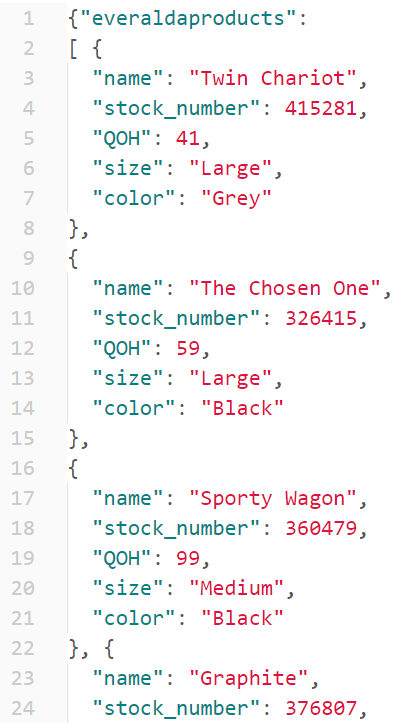
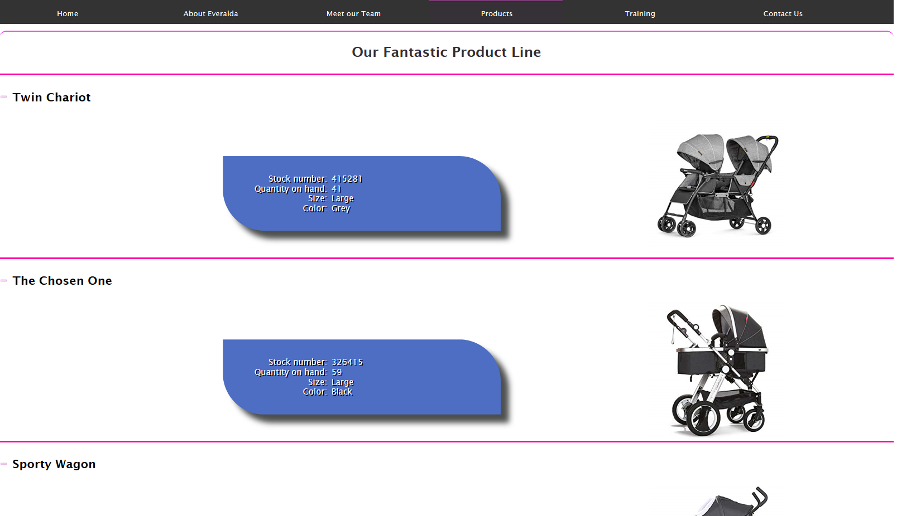
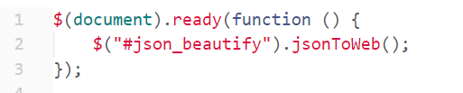
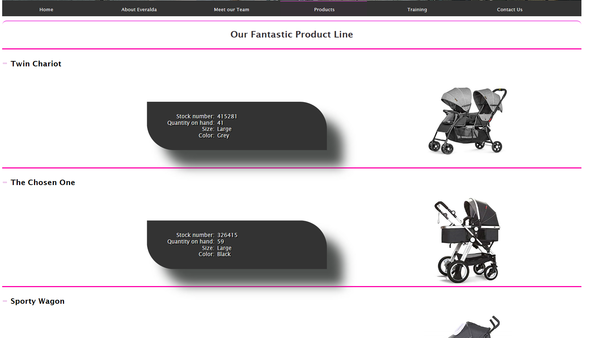
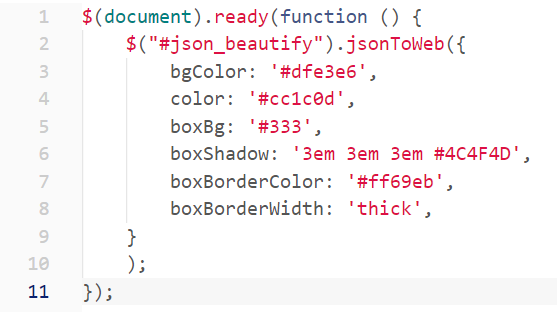
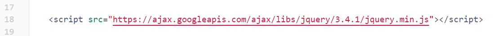
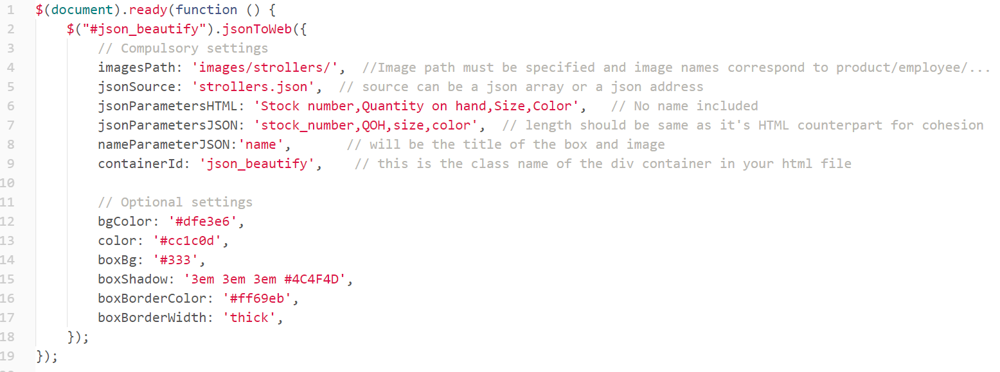
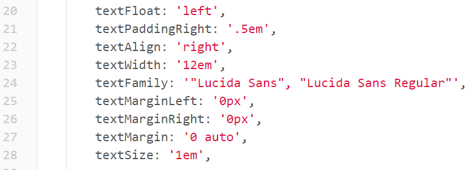
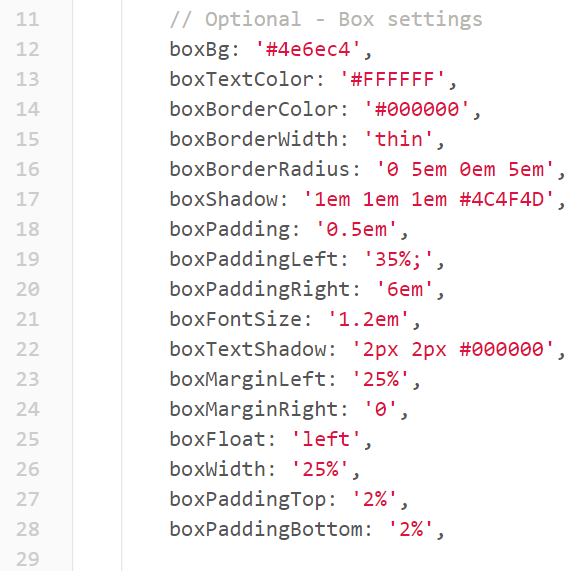
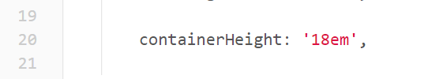

jsonToWeb Plugin
What it does
This plugin takes in a json link and draws a web control that is fully customizable, giving you granular control over every aspect of how the control would render.
The source can be a json request or an array of json data that would yield a result similar to the one below.
All you need is your json data and will data will display right on your webpage.
This can be achieved with a minimal amount of code, like is shown below.
You can manipulate all the options by invoking the plugin like this
This can be achieved by adding options that can override the default settings of the plugin as shown below.
The Rules
In your HTML file add this code
Add this code in the head of your html page.
-
Reference to a jQuery CDN.
-
Reference the jsonToWeb plugin.
-
Reference the jQuery plugin wrapper.
-
Add a div with a class of your choosing to pick up from the js plugin wrapper.
Add This code in the js plugin wrapper file as shown below
This code is used to call the jsonToWeb plugin add compulsory and optional parameters as seen below.
Non-Optional Settings
- Provide the Json source jsonSource
- Provide images path imagePath
- Provide a name header for the box nameParameterJSON
- Image file name is the same as nameParameterJSON
- Provide a comma delimited list of the box items excluding the name. It should show the items the way you want them to display on your page. Put the comma delimited list in jsonParametersHTML
- Provide a comma delimited list of items in the json string minus the name (title). Add the list to jsonParametersJSON the same way as shown below.
- The plugin puts the plugin results in a div with a class name of your choice that as to be put under containerId in the wrapper settings.
Optional Settings
Optional settings are for styling, they are divided into 2 sections.
-
Text inside of the box options:
 -
Box options:
 -
An optional property for the height of the div container.

You can use any combination of the optional settings feeding it css values. The settings you see in the diagrams above are the default settings for the plugin.